Peekaboo
Site Template Documentation (v1.0)
- Created: 04/08/2011
- latest Update: 08/19/2011
- By: population2
- themeforest.net/user/population2
- Email: populationtwo@gmail.com
Thank you for purchasing my theme. If you have any questions that are beyond the scope of this help file, please post your question in this forum. Please send a request through my profile page. You'll get an access within 24 hours (weekdays) once I verified your purchase. Thank you!
HTML Structure
This theme is a fixed layout with two columns. All of the information within the main content area is nested within a div with an id of main. The sidebar's content is within a div with an id of "sidebar". The general template structure is the same throughout the template except the index page. Here is the general structure of the typical page:
If you would like to edit the color, font, or style of any elements in one of these columns, you would do the following:
#footer {color: #someColor;}
If you find that your new style is not overriding, it is most likely because of a specificity problem. Scroll down in your CSS file and make sure that there isn't a similar style that has more weight.
I.E.
#container #footer {color: #someColor;}
So, to ensure that your new styles are applied, make sure that they carry enough "weight" and that there isn't a style lower in the CSS file that is being applied after yours.
The easiest way to find certain elements is by using Firebug. You can download it here and watch the introduction video here.
CSS Files and Structure
There are four css files in this theme.
1. style.css
This file contains some general styling, such as anchor tag colors, font-sizes, etc. Keep in mind, that these values might be overridden somewhere else in the file. The file is separated into sections using:
/*------------------------------------------------------------------ 1. GLOBAL ------------------------------------------------------------------*/ /*Basic elements*/ /*Structure*/ /*------------------------------------------------------------------ 2. HEADER ------------------------------------------------------------------*/ /*Navigation*/ /*------------------------------------------------------------------ 3. HOMEPAGE ------------------------------------------------------------------*/ /*The Nivo Slider Custom Styles*/ /*Quick Menu*/ /*Content*/ /*------------------------------------------------------------------ 4. SIDEBAR ------------------------------------------------------------------*/ /*Sidebar*/ /*------------------------------------------------------------------ 5. FOOTER ------------------------------------------------------------------*/ /* Map */ /* Twitter feed */ /*------------------------------------------------------------------ 6. SECTIONS ------------------------------------------------------------------*/ /*Common*/ /*Blog Page*/ /*About Page*/ /*Contact Page*/
If you would like to edit a specific section of the site, simply find the appropriate label in the CSS file, and then scroll down until you find the appropriate style that needs to be edited.
2. style-alpha.css, style-bravo.css, style-charlie.css, and style-delta.css
These files contains the alternate styles of the theme.
3. colorbox.css
This contains the styling for the colorbox plugin. No need to modify this file.
4. nivo-slider.css
This contains the styling for the Nivo Slider plugin. No need to modify this file.
Color Schemes
Styles
There are 5 styles included in this theme:
|
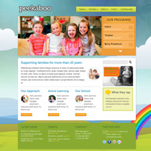 |
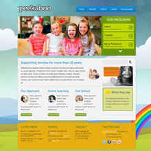 |
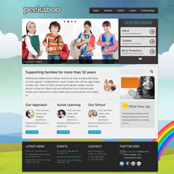 |
|
Style 1 - default.css |
Style 2 - style-alpha.css |
Style 3 - style-bravo.css |
|
|
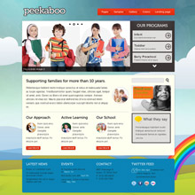 |
|
|
Style 4 - style-charlie.css |
Style 5 - style-delta.css |
Replace the default.css in the head tag with the alternate css files to use the other style.
<link rel="stylesheet" type="text/css" href="css/default.css" />
Background
There are 3 background included in this theme. You can change the background by changing the path to the background images in p2.js.
// Full page background
$.supersized({
//Background image
slides : [ { image : 'img/bg1.jpg' } ]
});
|
|
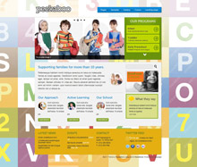 |
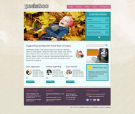 |
| Background 1 | Background 2 | Background 3 |

This theme uses Supersized core plugin for the background. It will resizes image to fill browser window while maintaining image dimension ratio. This template only use the core version of the plugin, meaning it only has the fullscreen background option ( no slideshow, flickr integration, and navigation).
Slider
This theme use Nivo slider plugin for the slider area. You can add as much slides as you like. The Images for the featured area should be 680px wide and 320px high. You can add, edit and delete slide items. this is the slide structure:
<div id="slider-wrapper" class="left">
<div id="slider" class="nivoSlider">
<a href="image url" target="_blank"><img src="image source url" /></a>
<a href="image url" target="_blank"><img src="image source url" title="This is slide image 2" /></a>
<a href="image url" target="_blank"><img src="image source url" /></a>
<img src="image source url" alt="" title="#htmlcaption" />
</div>
<div id="htmlcaption" class="nivo-html-caption"> Caption with <a href="#">a link</a>. </div>
</div>
If you want a specific slide image to link to somewhere simply wrap it with an anchor tag like this:
<a href="image url" target="_blank"><img src="image source url" /></a>
If you want a specific slide image to have a simple caption (withouth link), add the caption in the title attribute like this:
<a href="image url" target="_blank"><img src="image source url" title="This is slide image 2" /></a>
If you want a specific slide image to have a caption with link, add the caption in the title attribute like this:
<img src="image source url" alt="" title="#htmlcaption" />
And add the caption in this div:
<div id="htmlcaption" class="nivo-html-caption"> Caption with <a href="#">a link</a>. </div>
The slider is initiated in the end of index.html file. You can modify the transition effect by changing the effect parameters:
$(window).load(function() {
$('#slider').nivoSlider({
effect: 'fade',
});
});
The effect parameter can be any of the following:
- sliceDown
- sliceDownLeft
- sliceUp
- sliceUpLeft
- sliceUpDown
- sliceUpDownLeft
- fold
- fade
- random
- slideInRight
- slideInLeft
- boxRandom
- boxRain
- boxRainReverse
- boxRainGrow
- boxRainGrowReverse
For full parameters and options, pelase refer to the Nivo documentation.
Circular Thumbnails
This theme using circular thumbnails on the index page. The circular thumbnails are defined in 2 sizes. 100px x 100px and 60px x 60px.
100 px x 100 px thumbnail
<div style="background: url("img/stock/100x100_thumbnail_1.jpg") repeat scroll 0% 0% transparent;" class="thumbnail_100_right"></div>
60 px x 60 px thumbnail
<div style="background: url("img/stock/60x60_thumbnail_5.jpg") repeat scroll 0% 0% transparent;" class="thumbnail_60_left"></div>
Usage: Change the background source accordingly. The thumbnail image is embeded in the background image of a div element. That way you can easily use a common rectangular thumbnail image. No need to create the circular thumbnails.
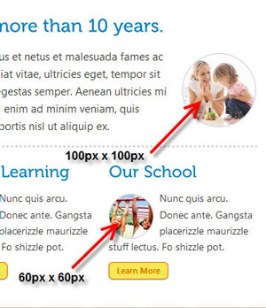
Maps
This theme has Google Maps in the contact page and in the footer area of every pages.
1. Footer area
The map will appear in a modal window when user click the "Map It" button.
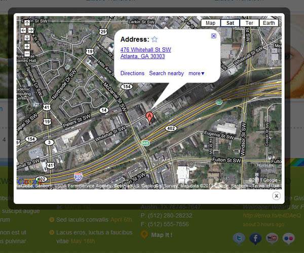
Follow these steps to set your location:
- Find your location on Google Maps
- Click the link and get the email or IM code.
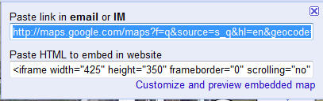 - Open p2.js and find this code:
// Google Map $("#modalmap").colorbox({iframe:true, innerWidth:"50%", innerHeight:"50%", href:" " }); - Paste the previous code you get from Google Map to the href.
- Add
&iwloc=A&output=embedto the end of the Google Map code.
It looks like this:
// Google Map $("#modalmap").colorbox({iframe:true, innerWidth:"50%", innerHeight:"50%", href:"[..google-map-code..]&iwloc=A&output=embed" }); });
2. Contact page
I use Google Map static API in the contact page. Follow these steps to set your location:
- Find your location on Google Maps
- Right click at the exact location of your address and click What's Here?
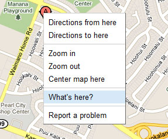 - Get the coordinates.
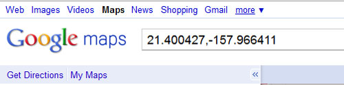 - Copy this code and replace the X and Y with the new coordinates
<a href="http://maps.google.com/maps?f=q&source=s_q&hl=en&geocode=&q=X,Y &aq=1&sll=X,Y" target="_blank"><img src="http://maps.google.com/maps/api/ staticmap?center=X,Y&zoom=15&size=310x240&maptype=roadmap&markers=color: blue|label:S|X,Y&sensor=false" alt="map" class="shadow" /></a>
Colorbox
Colorbox jQuery is a plugin to show photo and video in a modal window.
This theme has 5 effects pre configured in the p2.js.
1. Video
$(".video_modal").colorbox({iframe:true, innerWidth:"50%", innerHeight:"50%"});
It will show the videos at 50% size of your screen
Usage: Add "video_modal" class to the anchor tag.
<a href="http://player.vimeo.com/video/18879649" class="video_modal"><img src="img/stock/270x204_video_thumb_6.jpg" alt="Sorry Film Not Ready"/></a>
2. Photo - Elastic transition
$("a[rel='example1']").colorbox();
It will show the photo at the default Colorbox setting which is elastic transition.
Usage: Add "example1" to the rel attribute of the anchor tag.
<a href="img/stock/600x400_gallery_placeholder_1.jpg" rel="example1" ><img src="img/stock/270x204_gallery_placeholder_1.jpg" alt="placeholder"/></a>
3. Photo - Fade transition
$("a[rel='example2']").colorbox({transition:"fade"});
It will show the photo with fade transition.
Usage: Add "example1" to the rel attribute of the anchor tag.
<a href="img/stock/600x400_gallery_placeholder_1.jpg" rel="example2" ><img src="img/stock/270x204_gallery_placeholder_1.jpg" alt="placeholder"/></a>
4. Photo - No transition
$("a[rel='example3']").colorbox({transition:"none"});
It will show the photo with fade transition.
Usage: Add "example1" to the rel attribute of the anchor tag.
<a href="img/stock/600x400_gallery_placeholder_1.jpg" rel="example3" ><img src="img/stock/270x204_gallery_placeholder_1.jpg" alt="placeholder"/></a>
5. Photo - Slideshow
$("a[rel='example4']").colorbox({slideshow:true});
It will show the photo with fade transition.
Usage: Add "example4" to the rel attribute of the anchor tag.
<a href="img/stock/600x400_gallery_placeholder_1.jpg" rel="example4" ><img src="img/stock/270x204_gallery_placeholder_1.jpg" alt="placeholder"/></a>
You can modify the transition by changing the parameter and the rel attribute.
Please read here for full list of parameters and methods
Twitter Feed
The Twitter feed will appear in the footer area of each pages.
Usage:
- Open p2.js
- Find these code:
$(document).ready(function() { $("#twitter").getTwitter({ userName: "envato", numTweets: 1, loaderText: "Loading tweets...", slideIn: true, showHeading: true, headingText: "Latest Tweets", showProfileLink: true }); }); - Fill your username in the username parameter
Contact Form
In order to make the contact form works, you have to open contact.php and replace 'your email' with your email address.
JavaScript
All javascript files is in the js folder. This theme imports these Javascript files:
1. cufon (cufon-yui.js and Museo.font.js )
This script is used to replace the fonts with non-standard fonts. The font I used for this theme is Museo and Museo Sans. You can replace any text with cufon by adding "replace" class. The Cufon is initiated in p2.js.
// Cufon Cufon.replace('.replace',{fontFamily: 'Museo 500'} ); Cufon.replace('.sf-menu a,.sidebar-widget h4',{fontFamily: 'Museo Sans 500'} );
More information about cufon.
2. ColorBox v1.3.15 (jquery.colorbox.js)
A full featured, light-weight, customizable lightbox based on jQuery 1.3+ by Jack Moore. Full documentation here.
3. jQuery Form 2.18 (jquery.form.js)
The jQuery Form Plugin allows you to easily and unobtrusively upgrade HTML forms to use AJAX. Full documentation at http://jquery.malsup.com/form/
4. Nivo slider 2.4. (jquery.nivo.slider.pack.js)
A jquery slider by Gilbert Pellegrom. You can read further documentation at http://nivo.dev7studios.com/
5. Tiny Carousel 1.8 (jquery.tinycarousel.min)
A lightweight carousel for sliding html based content by Maarten Baijs. Full documentation at http://www.baijs.nl/tinycarousel/
6. Superfish v1.4.8. (superfish-compile.js)
A jQuery menu widget. Full documentation at http://plugins.jquery.com/project/Superfish
7. Supersized Version 3.1.3 Core (supersized.3.1.3.core.min)
Fullscreen Background jQuery Plugin by Sam Dunn. Full documentation at www.buildinternet.com/project/supersized
8. jQuery Tweet (jquery.tweet.js)
A jquery plugin for Twitter. http://tweet.seaofclouds.com/
PSD Files
There are 22 PSD included in this theme:
-
Home Page layout in 5 color styles
- index.psd
- index-alpha.psd
- index-bravo.psd
- index-charlie.psd
- index-delta.psd
-
9 PSDs layout in the default style:
- about.psd
- blog-1.psd
- blog-2.psd
- contact.psd
- full-width.psd
- landing.psd
- search.psd
- single.psd
- testimonials.psd
-
18 PSDs of the web elements (icons, widgets, etc)
.
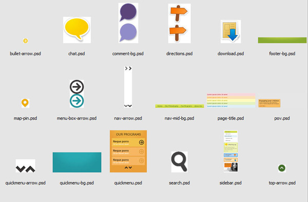
You can find the background alternatives in the index.psd.
Sources and Credits
All icons and font in this theme are free to share. Credits belong to:
Icons
- Social Media Balloons by Double-J designs. Licensed under Creative Commons.
- Brightmix by Brightmix. Licensed under WTFPL.
- Iconic by P.J. Onori. Licensed under Creative Commons.
Font
- Museo by Jos Buivenga (exljbris).
Epilogue
I ask that everyone please do not distribute this theme illegally. This theme represent weeks of work (sometimes months).
I will lose potential income if they are illegally distributed. This is the income that I spend to pay my bills.
So please, do not distribute illegally. And if you see a source of illegal files, please notify Envato team.
Thank you,
P2